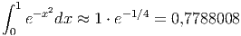
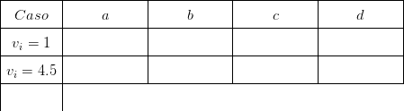
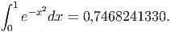
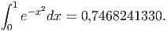
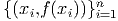

E 8.1.4. As tensões na entrada, , e saída, , de um amplificador foram medidas em regime estacionário conforme tabela abaixo.
 e  usando as seguintes técnicas:
e  usando as seguintes técnicas:
- Derivada primeira numérica de primeira ordem usando o próprio ponto e o próximo.
- Derivada primeira numérica de primeira ordem usando o próprio ponto e o anterior.
- Derivada primeira numérica de segunda ordem usando o ponto anterior e o próximo.
- Derivada primeira analítica da função do tipo  que melhor se ajusta aos pontos pelo critério dos mínimos quadrados.
y=[0 1.05 1.83 2.69 3.83 4.56 5.49 6.56 6.11 7.06 8.29]